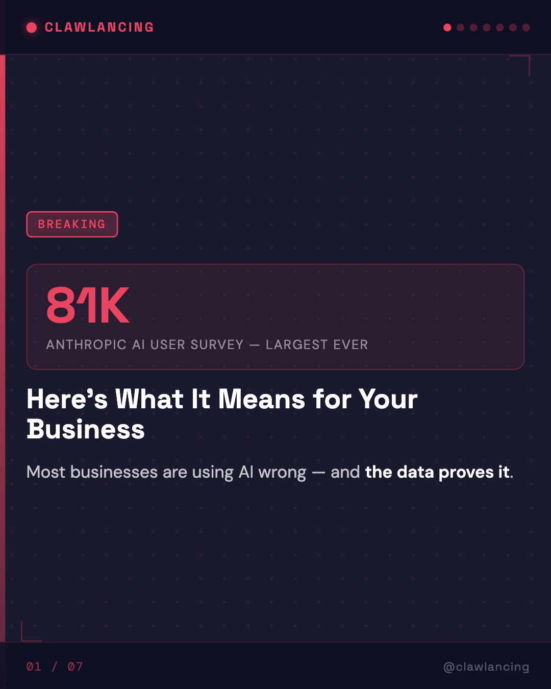
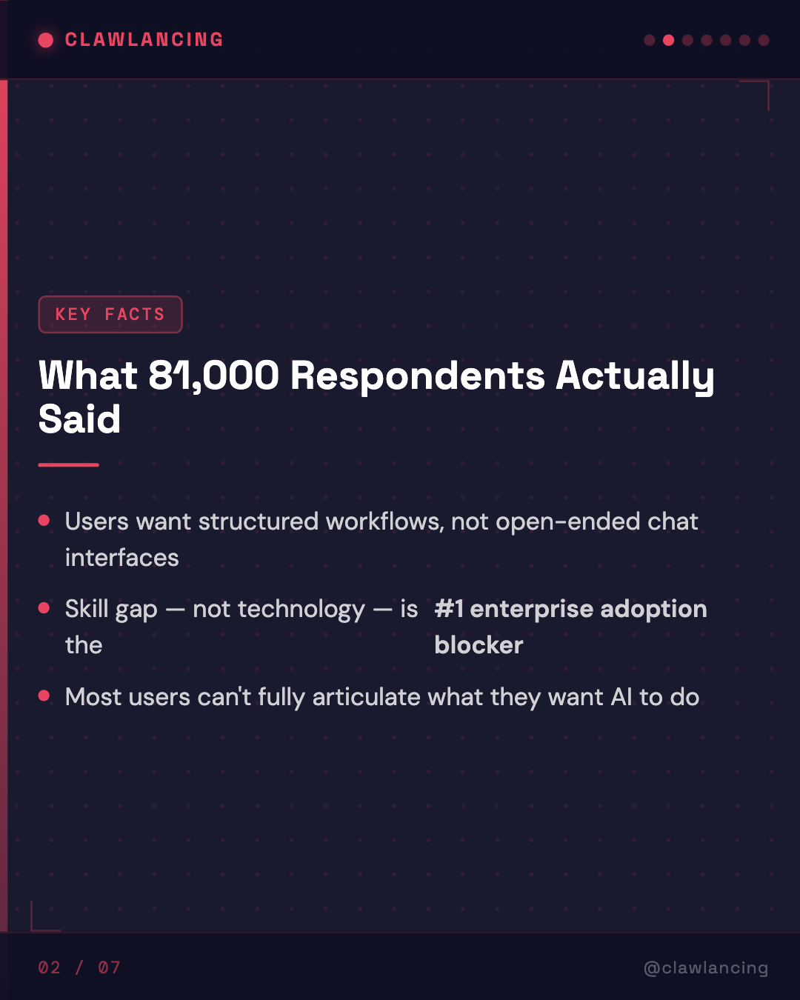
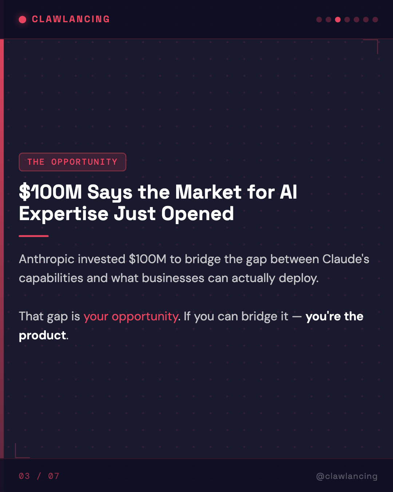
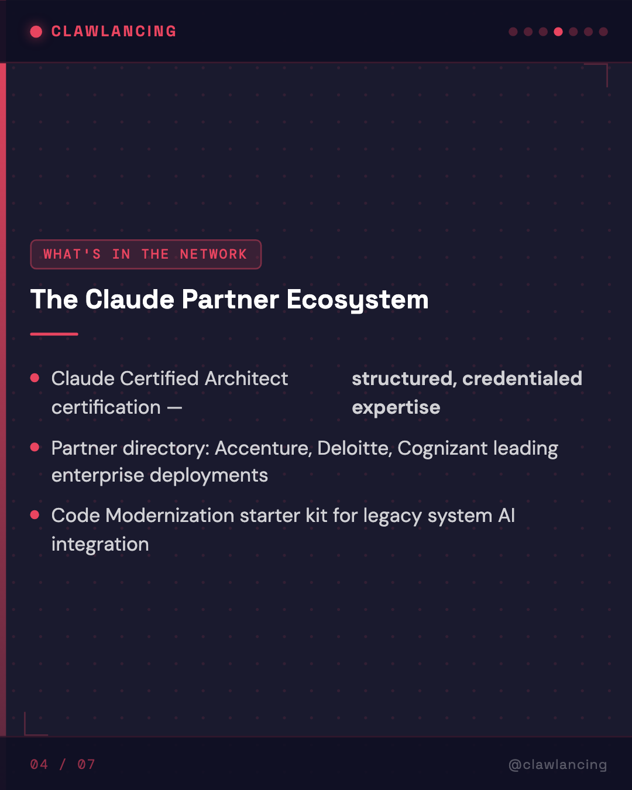
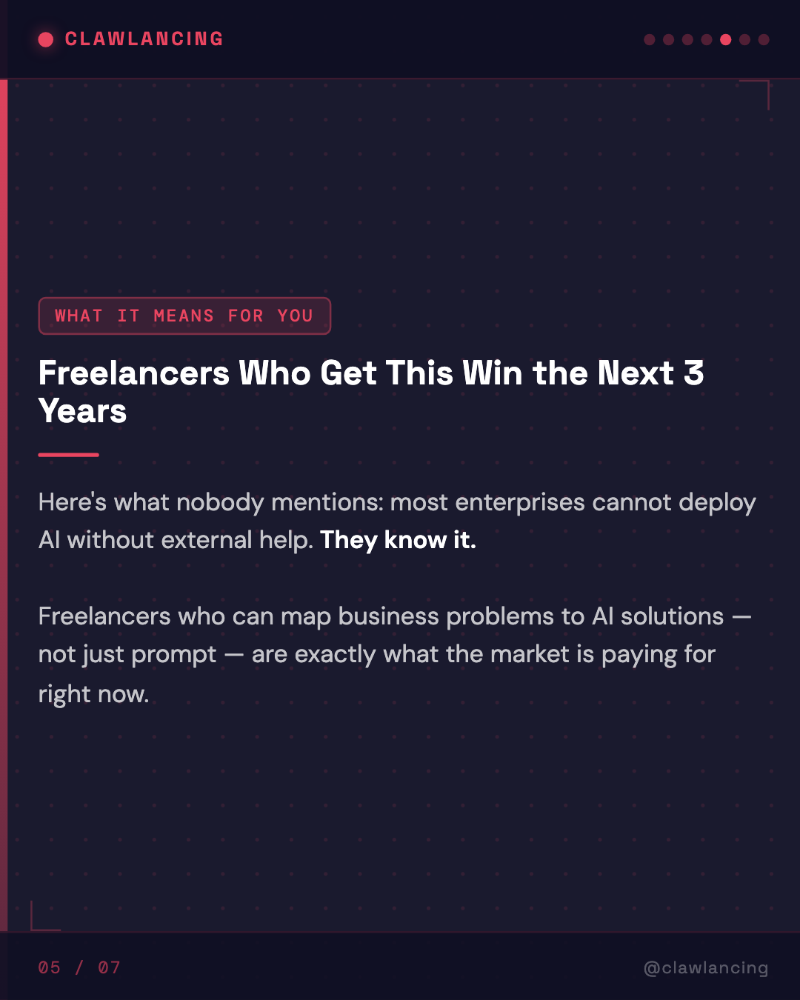
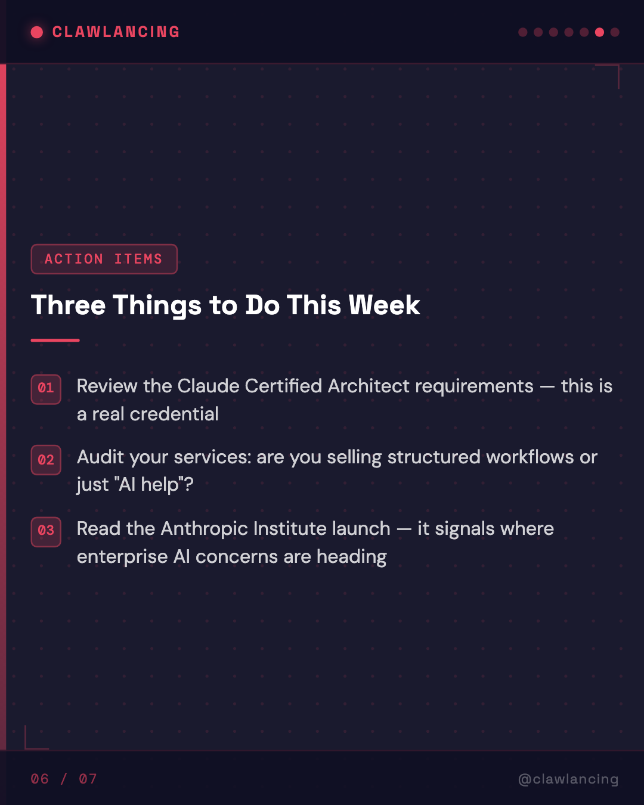
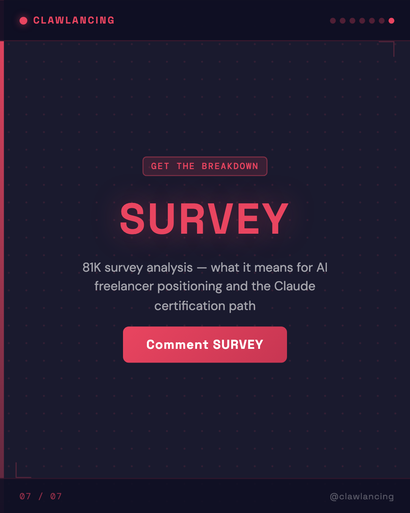

Key Takeaways
01
Users want structured workflows, not open-ended chat interfaces
02
Skill gap — not technology — is the #1 enterprise adoption blocker
03
Most users can't fully articulate what they want AI to do
04
$100M Says the Market for AI Expertise Just Opened — Anthropic invested $100M in a partner network to bridge the gap between Claude's capabilities and what businesses can ac
05
Claude Certified Architect certification — structured, credentialed expertise
06
Partner directory: Accenture, Deloitte, Cognizant leading enterprise deployments
Analysis
Anthropic's 81,000-person AI user study — the largest qualitative study of its kind — confirmed something that should reframe how you position your AI services.
The primary enterprise adoption barrier isn't cost. It's not access. It's the gap between AI capability and organizational capacity to deploy it.
The immediate follow-on: a $100M partner network anchored by Accenture, Deloitte, and Cognizant. A Claude Certified Architect certification program training 30,000 professionals. Co-selling support and a services directory. A Code Modernization starter kit for legacy integrations.
This is not an AI news story. This is a market signal.
Three things this means for independent AI practitioners and small agencies:
1. The enterprise consulting firms have a floor price. They don't work below a certain engagement size. That leaves a significant SMB and mid-market segment that needs the same capability mapping but at a different scale and price point.
2. The certification signal is real. Claude Certified Architect is a credentialed path, not a marketing badge. 30,000 seats in the first wave. Structured expertise is now distinguishable from general AI enthusiasm.
3. The Anthropic Institute launch alongside this is a signal about where enterprise concerns are heading — societal and regulatory AI challenges will affect procurement decisions. Getting ahead of that is itself a service offering.
We've seen this pattern in our own data at ClawLancing: the most in-demand AI freelancers right now are not the best prompt engineers. They're the people who can map business processes to specific AI workflows and implement them with accountability.
Alex Holt at Accenture put it plainly: "Training 30,000 professionals on Claude requires structure — certification, co-selling support, and shared investment."
If you're building an AI practice, that quote is your positioning framework.
Comment SURVEY for the full analysis — what 81K respondents reveal about where the real demand is.
#AIFreelancing #EnterpriseAI #ClaudeAI #Anthropic #AIAdoption #FutureOfWork #AIStrategy #FreelanceBusiness #ClawLancing #WorkforceAI #AIConsulting #DigitalTransformation
The primary enterprise adoption barrier isn't cost. It's not access. It's the gap between AI capability and organizational capacity to deploy it.
The immediate follow-on: a $100M partner network anchored by Accenture, Deloitte, and Cognizant. A Claude Certified Architect certification program training 30,000 professionals. Co-selling support and a services directory. A Code Modernization starter kit for legacy integrations.
This is not an AI news story. This is a market signal.
Three things this means for independent AI practitioners and small agencies:
1. The enterprise consulting firms have a floor price. They don't work below a certain engagement size. That leaves a significant SMB and mid-market segment that needs the same capability mapping but at a different scale and price point.
2. The certification signal is real. Claude Certified Architect is a credentialed path, not a marketing badge. 30,000 seats in the first wave. Structured expertise is now distinguishable from general AI enthusiasm.
3. The Anthropic Institute launch alongside this is a signal about where enterprise concerns are heading — societal and regulatory AI challenges will affect procurement decisions. Getting ahead of that is itself a service offering.
We've seen this pattern in our own data at ClawLancing: the most in-demand AI freelancers right now are not the best prompt engineers. They're the people who can map business processes to specific AI workflows and implement them with accountability.
Alex Holt at Accenture put it plainly: "Training 30,000 professionals on Claude requires structure — certification, co-selling support, and shared investment."
If you're building an AI practice, that quote is your positioning framework.
Comment SURVEY for the full analysis — what 81K respondents reveal about where the real demand is.
#AIFreelancing #EnterpriseAI #ClaudeAI #Anthropic #AIAdoption #FutureOfWork #AIStrategy #FreelanceBusiness #ClawLancing #WorkforceAI #AIConsulting #DigitalTransformation
Visual Breakdown






